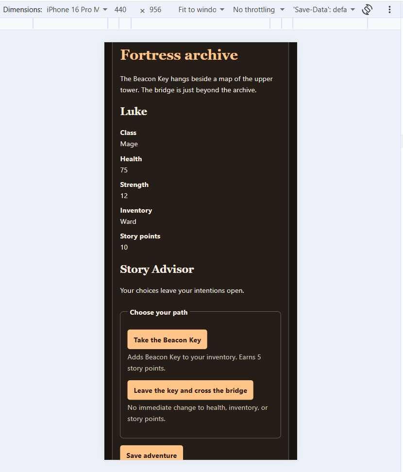
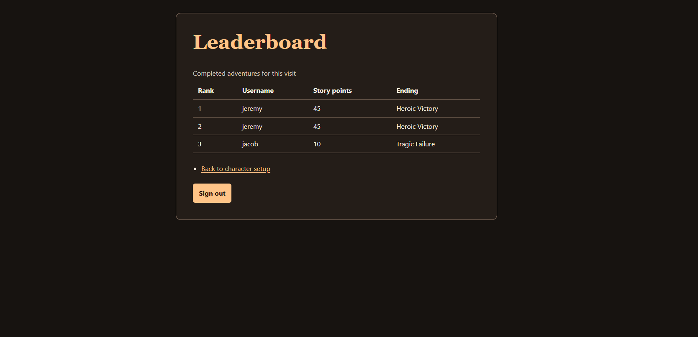

The Last Ember Sprint Log
Jeremy Henry-Atohengbe · Sole developer
Sprint 1: Repository and page structure
I set up the repository and README, then built the six page previews and connected their navigation.
Sprint 2: Accounts and session protection
I added registration, password verification, sign-out, and access checks for signed-out visitors. Registration initially failed because PHP could not write to the account folder. Applying the permissions recommended by Codd support made registration work.
Sprint 3: Characters and branching story
I added Warrior, Mage, and Rogue character creation, a 15-node story, and three endings. PHP checks strength and inventory requirements before applying choices.
Sprint 4: Advisor, leaderboard, and checkpoints
I added consequence previews and alignment feedback based on the player's choices. The session leaderboard records each completed run once. Save and resume uses a cookie token linked to a server-side checkpoint for the signed-in account.
Sprint 5: Styling and Codd testing
I added a shared stylesheet and tested the deployed game. The account flow, class requirements, advisor feedback, all three endings, score ordering, save and resume, mobile layout, and keyboard checks passed.



Sprint 6: Documentation and submission
In progress. I am assembling the sprint evidence, Development Journal, project report, demo recording, and submission links.